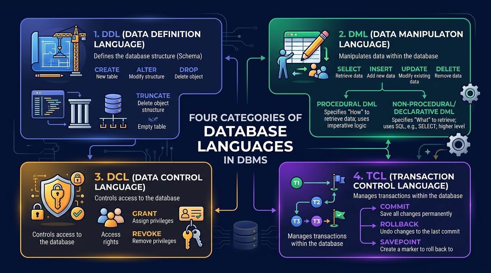

Database Languages (DDL, DML, DCL, TCL)
Master the four categories of database languages in SQL and RDBMS. Detailed breakdown of Data Definition, Data Manipulation (Procedural vs Declarative), Data Control, and Transaction Control commands.
🖼️ Visual Diagram: The 4 Database Language Categories
The diagram below provides a complete overview of DDL, DML, DCL, and TCL commands, including the branch between Procedural and Declarative DML:

📐 1.5.1 Data Definition Language (DDL)
DDL commands are used to create, modify, and destroy the structural framework (Schema) of database objects such as tables, indexes, views, and schemas.
ROLLBACK.
Key DDL Commands:
CREATE: Creates a new table, view, or database.CREATE TABLE Student (RollNo INT PRIMARY KEY, Name VARCHAR(50));ALTER: Modifies an existing table structure (adds columns, drops columns, changes data types).ALTER TABLE Student ADD Email VARCHAR(100);DROP: Completely removes a table or database object permanently along with all its data and structure.DROP TABLE Student;TRUNCATE: Removes ALL rows from a table while preserving the table structure.TRUNCATE TABLE Student;RENAME: Renames an existing database object.
✏️ 1.5.2 Data Manipulation Language (DML)
DML commands are used to retrieve, insert, modify, and delete the actual data records stored inside tables.
Key DML Commands:
SELECT: Retrieves tuples matching specified criteria.INSERT: Adds new tuples/rows into a table.UPDATE: Modifies attribute values of existing tuples.DELETE: Removes specific tuples based on aWHEREclause.
🔥 Deep-Dive: Procedural DML vs Declarative (Non-Procedural) DML
In exam papers, DML is categorized into two distinct paradigms:
| Comparison Factor | Procedural DML (Low-Level) | Declarative / Non-Procedural DML (High-Level) |
|---|---|---|
| User Specification | User specifies WHAT data is needed AND HOW to get it. | User specifies ONLY WHAT data is needed (DBMS determines how). |
| Level | Low-level / Imperative code. | High-level / Declarative SQL. |
| Example | Relational Algebra, PL/SQL loops, custom C++ file loops. | SQL Queries (e.g., SELECT * FROM Student WHERE Age > 20). |
| Optimization | Written manually by developer. | Handled automatically by DBMS Query Optimizer. |
⚡ TRUNCATE (DDL) vs DELETE (DML) — Exam Favorite
| Feature | TRUNCATE (DDL) |
DELETE (DML) |
|---|---|---|
| Category | Data Definition Language (DDL) | Data Manipulation Language (DML) |
| WHERE Clause | Not allowed (Removes ALL rows) | Allowed (Deletes specific rows) |
| Performance | Faster (deallocates data pages) | Slower (logs each row deletion) |
| Rollback | Cannot be rolled back (Auto-Commit) | Can be rolled back via ROLLBACK |
| Identity Reset | Resets Auto-Increment counters to 1 | Does NOT reset Auto-Increment counters |
🛡️ 1.5.3 Data Control Language (DCL)
DCL commands are used to enforce security permissions and manage user access privileges on database objects.
Key DCL Commands:
GRANT: Gives specific access privileges to a user or role.GRANT SELECT, INSERT ON Student TO User_Alex;REVOKE: Withdraws previously assigned privileges from a user.REVOKE INSERT ON Student FROM User_Alex;
🔄 1.5.4 Transaction Control Language (TCL)
TCL commands manage transactions to maintain data consistency and enforce ACID properties during execution.
Key TCL Commands:
COMMIT: Permanently saves all changes made during the current transaction to disk.COMMIT;ROLLBACK: Undoes all changes made during the current transaction back to the lastCOMMITorSAVEPOINT.ROLLBACK;SAVEPOINT: Sets a checkpoint marker within a transaction for partial rollbacks.SAVEPOINT sp1;
-- some operations --
ROLLBACK TO sp1;
🎯 IBPS SO IT Officer — Exam Focus & Past PYQ Cues
Q1: TRUNCATE TABLE belongs to which category of SQL commands?
👉 Answer: DDL (Data Definition Language) because it deallocates storage pages and cannot be rolled back.
Q2: What is the main difference between Relational Algebra and SQL DML?
👉 Answer: Relational Algebra is Procedural DML (specifies HOW to get data), whereas SQL is Declarative/Non-Procedural DML (specifies WHAT data is needed).
Q3: Which command is used to remove granted database privileges from a user?
👉 Answer: REVOKE (DCL).
Q4: Where is the metadata output of compiled DDL statements stored?
👉 Answer: Data Dictionary (System Catalog).